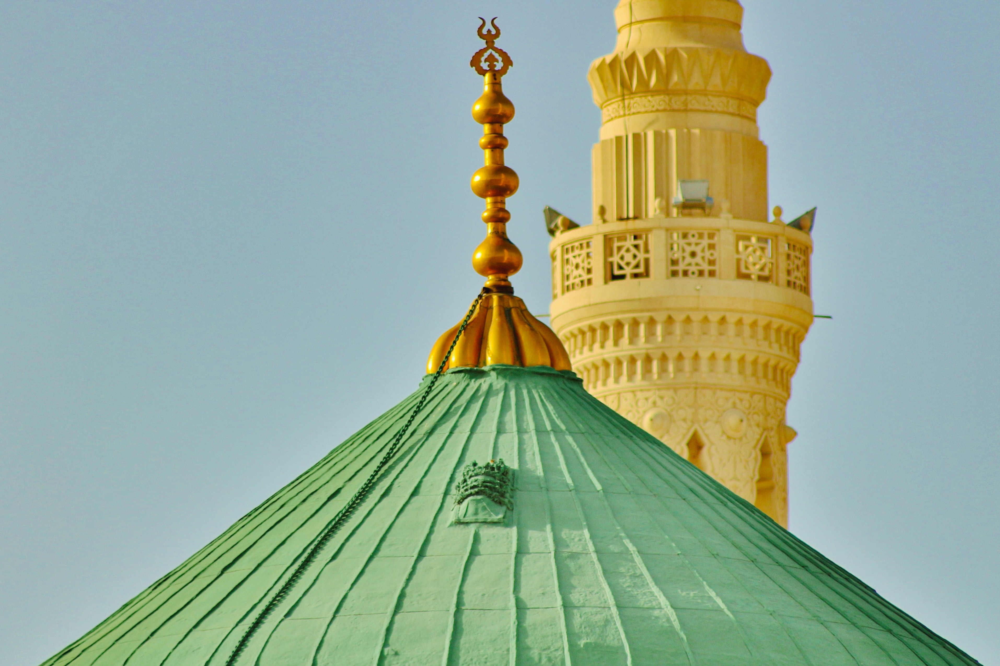

Daftar Hotel
-
Madinah
 Hotel
Mekah
Hotel
Mekah
-
Madinah
 Hotel
Mekah
Hotel
Mekah
-
Madinah
 Hotel
Mekah
Hotel
Mekah
-
 Hotel MekahMadinah
-
Madinah
 Hotel
Mekah
Hotel
Mekah
Selasa, 19 Desember 2023
- 21:00 : Berkumpul di Pepper Lunch Bandara Soekarno Hatta terminal III, Gate 1 dan menyerahkan koper kepada Tim Uhud yang bertugas
- 22:00 : Pembagian dokumen perjalanan Jamaah
- 22:30 : Menuju ruang tunggu keberangkatan
Rabu, 20 Desember 2023
- 00:40 : Take off menuju Jeddah dengan Saudia Airlines SV-823
- 06:35 : Tiba di Bandara Jeddah transit kurang lebih 3 Jam
- 09:55 : Take off menuju Istanbul dengan Saudia Airlines SV-257
- 13:45 : Tiba di Bandara Istanbul
- Bertemu dengan lokal guide
- Berangkat dari bandara untuk ke makan siang
- Mengunjungi Masjid Hijau, Maqam Hijau, Rumah Sutra dan Masjid Agung
- Makan malam dan Check In hotel Bursa
Kamis, 21 Desember 2023
- Sarapan di hotel
- Mengunjungi Toko manisan Turki dan Uludağ untuk bermain salju
- Makan siang di Restoran lokal
- Perjalanan menuju bandara untuk terbang ke Cappadocia
- Makan malam dan Check In hotel Ajwa Cappadocia
Jum’at, 22 Desember 2023
- Naik balon udara (optional tergantung keadaan & konsisi cuaca)
- Sarapan di hotel
- Mengunjungi Göreme, Uçhisar untuk photo stop
- Makan siang di Restoran lokal
- Mengunjungi toko karpet dan toko batu khas Turki
- Menaiki Jeep Safari waktu matahari terbenam (optional tergantung keadaan & konsisi cuaca)
-
Bermalam hotel Ajwa Cappadocia
Sabtu, 23 Desember 2023
- Sarapan di hotel
- Mengunjungi toko kulit, Istana Topkapı dan Ayasofya
- Makan siang
- Masjid Biru, Roman Hipodrom dan Grand Bazaar
- Makan malam dan menginap di hotel
Ahad, 24 Desember 2023
- Sarapan di hotel
- Tour di Bosphorus
- Mengunjungi Masjid dan Maqam Sultan Muhammad Al-Fateh
- Makan siang
- Mengunjungi Makam Abu Ayub Al-Ansari
- Waktu bebas di Alun Alun Taksim dan Jalan Istiklal
- Makan malam dan menginap di hotel
Senin, 25 Desember 2023
- Sarapan di hotel
- Check Out hotel
- Menuju bandara untuk keberangkatan ke Madinah
- 13.45 : Take off menuju Jeddah dengan Saudia Airlines SV-258
- 17.15 : Tiba di Bandara Madinah dan melakukan proses Imigrasi
- Pengecekan barang bagasi waktu kedatangan oleh Tim Uhud Tour di Bandara
- Menuju hotel Madinah
- Check in hotel Madinah
Selasa, 26 Desember 2023
- Ziarah ke Raudhah dalam Masjid Nabawi
(Makam Rasulullah, Sahabat Abu Bakar & Umar), waktu tentatif
Keterangan : “Ada Tour Leader Khusus Wanita saat Ke Raudha”
- Melakukan Shalat serta Ibadah Sunnah lainnya di Masjid Nabawi (waktu tentatif)
(Sarapan, Makan Siang, Makan Malam - Fullbroad)
Rabu, 27 Desember 2023
- City Tour Madinah
- Melakukan Shalat serta Ibadah Sunnah lainnya di Masjid Nabawi (waktu tentatif)
(Sarapan, Makan Siang, Makan Malam - Fullbroad)
Kamis, 28 Desember 2023
- Koper dan Tas lainnya dikumpulkan depan kamar masing-masing
- Mandi untuk persiapan Ihram
- Memakai Ihram dari hotel dan Check Out
- Menuju Makkah dengan KERETA HARAMAIN (estimasi 2 ½ Jam), miqat serta niat Umrah saat di kereta
- Tiba di Makkah dan Check in hotel Makkah
- Koper dikirimkan ke kamar masing-masing oleh Tim Uhud
- Melaksanakan Ibadah Umrah di Masjidil Haram
(Makan Fullbroad / Menyusaikan saat perjalanan)
Jum’at, 29 Desember 2023
- Persiapan Shalat Jum’at
- Melaksanakan Shalat serta Ibadah Sunnah lainnya dan memperbanyak Tawaf Sunnah (waktu tentatif)
(Sarapan, Makan Siang, Makan Malam - Fullbroad)
Sabtu, 30 Desember 2023
- Melaksanakan Shalat serta Ibadah Sunnah lainnya dan memperbanyak Tawaf Sunnah (waktu tentatif)
(Sarapan, Makan Siang, Makan Malam - Fullbroad)
Ahad, 31 Desember 2023
- City Tour Makkah (Museum Wahyu) & Thaif
- Menuju hotel jeddah & Check In hotel
(Makan Fullbroad / Menyusaikan saat perjalanan)
Senin, 01 Januari 2024
- Koper dan Tas lainnya dikumpulkan depan kamar masing-masing
- Persiapan Check Out hotel
- Menuju Bandara Jeddah
- 08:55 : Take off menuju Jakarta dengan Saudia Airlines SV-818
- 22:40 : InsyaAllah tiba di Bandara Soekarno Hatta Terminal 3
Program Umroh Bersama Uhud Tour telah selesai
Terimakasih Atas Kepercayaan Anda memilih Travel Kami
Jazakumullah Khairan
*Sewaktu – waktu Itinerary dapat berubah tanpa pemberitahuan
.accordion-flush class. This is the second item's
accordion body. Let's imagine this being filled with some actual content..accordion-flush class. This is the third item's
accordion body. Nothing more exciting happening here in terms of content, but just
filling up the space to make it look, at least at first glance, a bit more
representative of how this would look in a real-world application..accordion-flush class. This is the third item's
accordion body. Nothing more exciting happening here in terms of content, but just
filling up the space to make it look, at least at first glance, a bit more
representative of how this would look in a real-world application.Booking Sekarang